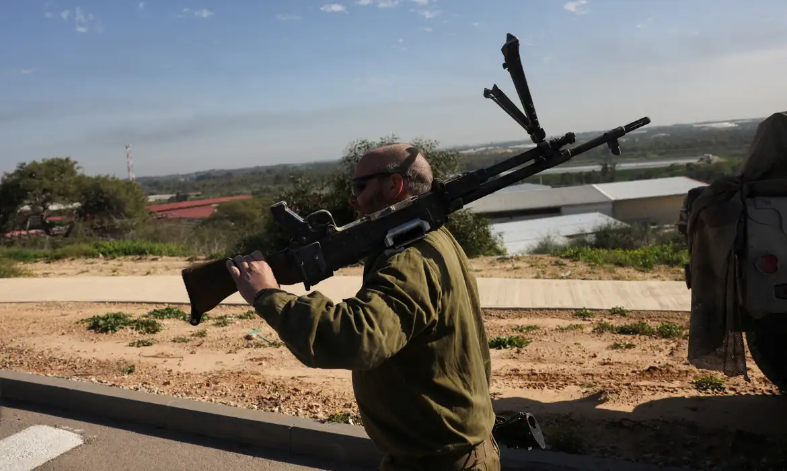

Israel suspende estado de emergência no sul do pais
O ministro da Defesa israelense, Israel Katz, anunciou nesta segunda-feira (27) a suspensão do estado de emergência em vigor no sul do país desde 7 de outubro de 2023, quando o Hamas lançou ataques que deixaram cerca de 1.200 mortos e 251 reféns. A medida entrará em vigor nesta terça-feira.
“Decidi adotar a recomendação das Forças de Defesa de Israel (IDF) e suspender, pela primeira vez desde 7 de outubro de 2023, a situação especial na frente interna”, disse o ministro, em comunicado divulgado pelos meios de comunicação israelenses.
A decisão, segundo Israel Katz, “reflete a nova realidade de segurança no sul do país, alcançada graças às ações determinadas e decisivas das tropas heroicas contra a organização terrorista Hamas nos últimos dois anos”.
A medida põe fim à “situação especial” que se mantinha apenas no sul de Israel, permitindo às autoridades locais a adoção de medidas de emergência de defesa próximas da Faixa de Gaza, acrescenta a nota citada pela imprensa israelense.
Apesar de o estado de emergência se manter formalmente até agora, a região já tinha retomado grande parte da normalidade nos últimos meses.
De acordo com dados do governo israelense, cerca de 90% dos moradores dos kibutz, comunidades agrícolas que foram um dos alvos dos ataques do grupo extremista palestino Hamas, em outubro de 2023, já regressaram às suas casas.
Os ataques do Hamas desencadearam uma ofensiva militar israelense na Faixa de Gaza, território controlado pelo grupo extremista desde 2007, que durou cerca de dois anos e deixou mais de 38 mil mortos no enclave.
Após negociações indiretas impulsionadas pelos Estados Unidos e apoiadas por outros mediadores internacionais como Egito, Catar e Turquia, Israel e o Hamas acertaram um cessar-fogo, em vigor desde 10 de outubro.